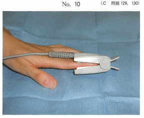

パルスオキシメータは、非侵襲的に経皮的動脈血酸素飽和度（SpO₂）と脈拍数を連続的に測定できるモニター機器である。
手指や耳朶にプローブを挟むだけで測定を開始でき、全身麻酔・精神鎮静法・歯科診療で広く使用される。
※ SpO₂とPaO₂は異なる。PaO₂の測定には動脈血採取による血液ガス分析が必要。
| SpO₂値 | 判定 | 対応 |
|---|---|---|
| 95%以上 | 良好な呼吸状態 | 経過観察 |
| 90〜94% | 要注意 | 原因検索 |
| 90%未満 | 低酸素血症 | 原因究明と対策が必要 |
| 異常 | 検出指標 | メカニズム |
|---|---|---|
| 上気道閉塞 | SpO₂低下 | 換気障害→低酸素血症 |
| 血管迷走神経反射 | 脈拍数低下（徐脈） | 迷走神経亢進→徐脈 |
| 呼吸抑制 | SpO₂低下 | 低換気→低酸素血症 |
モニター中の写真（別冊No.10）を別に示す。
測定しているのはどれか。2つ選べ。

【解説】写真はパルスオキシメータのプローブを指に装着した様子。パルスオキシメータで測定できるのは脈拍と経皮的動脈血酸素飽和度（SpO₂）である。動脈血酸素分圧（PaO₂）の測定には動脈血採取が必要。
歯科治療の際、写真（別冊No.10）の対応が必要なのはどれか。2つ選べ。
【解説】脳性麻痺は嚥下・呼吸機能障害のリスクがあり、Fallot四徴症はチアノーゼ性心疾患で低酸素血症のリスクがある。いずれもパルスオキシメータによるSpO₂モニタリングが必要。
パルスオキシメータが症状の検出に有用なのはどれか。2つ選べ。
【解説】上気道閉塞ではSpO₂低下を検出できる。血管迷走神経反射では徐脈（脈拍数低下）を検出できる。過換気症候群ではSpO₂は正常〜上昇するため検出に不向き。